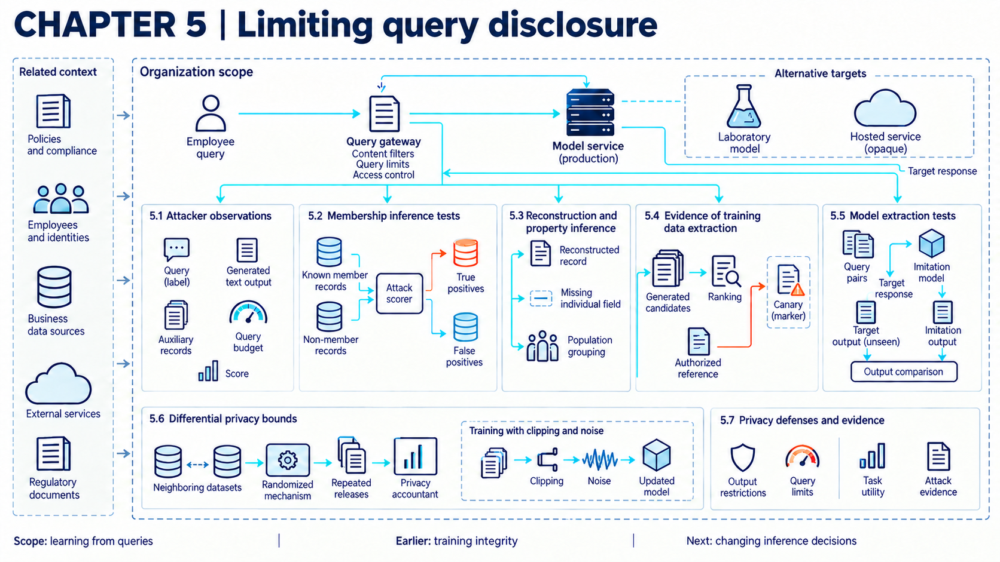
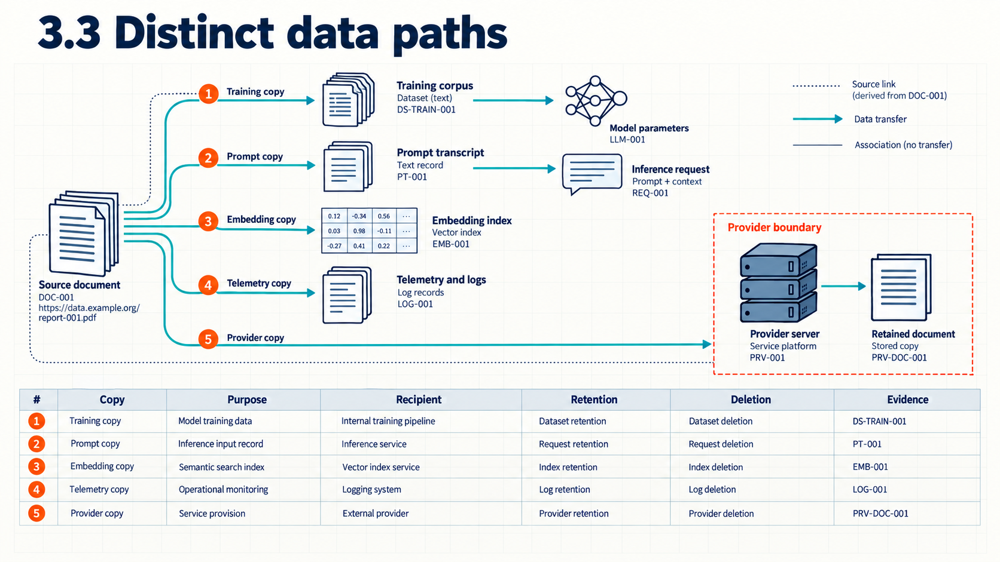
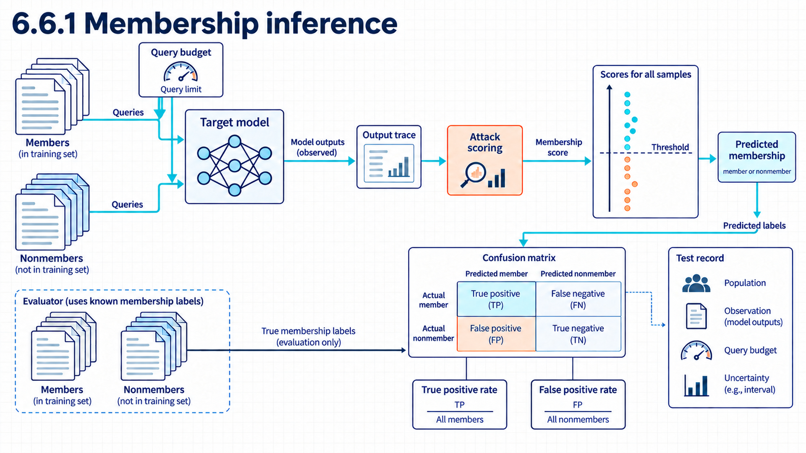

5 Exposing data through AI
An AI application can expose protected information through the data it sends, the copies it keeps, or the answers its model returns to specially chosen queries. Each route needs its own evidence, because a control on one route does not cover the others.

Suppose an employee uses a support assistant to draft a reply to a customer ticket. The ticket contains an account email, free text describing the problem, and an internal fraud flag. The application runs its own retrieval and then sends selected fields to an external model service, which returns drafted text. Protected information could leave the organization inside that provider request. Copies could also remain in logs, caches, or backups. If protected records were used for training, a separate query attack might recover memorized content or infer information about those records. Sending a prompt to a provider does not itself establish that the provider trains on it. The question is what each of these routes can disclose and what would show that it did.
Assume the organization has approved collection and processing for particular purposes and recipients. Those permissions set the rules for handling the data. They do not show that the application enforces them. The allocation of data rights and responsibilities is developed in responsibility across organizational boundaries (Chapter 21). The technical distinction is between information carried directly by application requests or stored copies and information exposed through a model’s learned behavior. Training, inference, and retrieval create different paths, even when they use records from the same collection.
Example
Comparing what two interfaces expose. Suppose a hosted classifier serves one target record through two interfaces. Interface A returns only a class label. Interface B returns the label and three class probabilities. Both allow 100 adaptive queries from one account. The same 10 inputs produce identical labels, while interface B also exposes how sharply the model separates the classes.
Interface B returns more information for the same queries: an analyst can use probability differences that interface A does not reveal. A disclosure result measured on interface B therefore cannot be assigned to interface A without another test.
5.1 Requests and returned content
The first route is ordinary application traffic: fields the application sends outward and content it returns to the caller. The protection question is which fields may cross each boundary for the stated purpose, and the evidence is the data that actually crossed.
5.1.1 Data classes and purposes
Before approving an AI path, the organization needs to know what data will cross it and why the processing is needed. It also records which party will receive the result. Data classification groups records by the harm that disclosure, alteration, or loss could cause. A processing purpose states the reason for a use. The receiving party is the organization or service that obtains the data, including an external model provider.
The NIST Privacy Framework separates the inventory of systems, people, data actions, purposes, and processing environments from the policies that govern them.1 Its Generative AI Profile also recommends checking training-data use for intellectual-property and privacy risk.2 These sources structure the decision but do not determine whether a specific use is lawful. A useful record identifies the data category and processing purpose. It also assigns a responsible internal role and lists every receiving party. That record supplies the allowed-source and purpose rules that the technical checks below enforce.
Example
Classifying fields before transfer. Suppose the support ticket from the opening contains a ticket number, an account email, free text, and an internal fraud flag. The reference record permits the ticket number and free text for response drafting. The email remains inside the organization, and the fraud flag is excluded from this purpose.
Assume context assembly keeps the ticket text, substitutes an internal case identifier for the email, and drops the fraud flag. The observed serialized request contains only the permitted fields. The conclusion is limited to this data class, purpose, recipient, and tested request path. It says nothing about whether the organization was entitled to process these fields in the first place; that permission decision belongs with the responsibility analysis, not with this filtering check.
5.1.2 Distinct data paths

Permission to use a source record for one purpose does not automatically cover every copy the system makes. A training corpus is the collection of examples used to update model parameters during training, while a prompt record affects one inference request. Numeric representations used for comparison or retrieval (embeddings) work as described in poisoning retrieved content. Telemetry records operational events such as latency, errors, or resource use.
The Privacy Framework calls for an inventory of data actions, data elements, purposes, and internal, cloud, or third-party processing environments.3 Applied to the reference system, the inventory follows source files into preparation jobs and their outputs. Separate entries cover indexes, embeddings, prompts, retrieved context, feedback, telemetry, and logs. This AI-specific list is a system decomposition based on common architecture rather than a structure prescribed by the framework.
Derived forms should remain linked to their source and purpose because transformation does not by itself remove sensitive information. Each resulting path becomes the subject of a separate disclosure-control decision: approval for the source does not automatically cover later uses, and a check on one path says nothing about the copies sitting on another.
5.1.3 Data disclosure controls
Once the paths are visible, the disclosure policy states which identity may send each field and identifies the permitted recipient. A connector scope is the set of resources and operations granted to an integration. Redaction removes or masks selected content. Pseudonymization replaces direct identifiers while retaining a controlled way to reconnect records. A data loss prevention check inspects content or metadata against disclosure rules.
The Privacy Framework calls for managed permissions and authorizations based on least privilege and separation of duties.4 The UK National Cyber Security Centre (NCSC) and its partners recommend controls before potentially sensitive information is sent to an external application programming interface (API).5 These controls work at different points. Permissions limit who can request data, while connector scopes restrict what a service can fetch. Content checks apply to the permitted transmission. Because detection quality depends on the data type and rule set, secret scanning, redaction, and pseudonymization each require tests against representative records. No universal detection rate follows from the guidance.
Example
Testing a seeded disclosure rule. Suppose the authorized task is a contract summary over retrieval followed by inference. The input contract contains one seeded test credential and a customer identifier. The employee may read the document, but the disclosure rule keeps both fields out of the request sent to the external model.
Assume the connector returns the document, the content check removes the credential, and pseudonymization replaces the customer identifier with customer-17. The observed serialized request lacks the credential and the direct identifier. The conclusion is that the tested rules changed this transfer. It does not establish their detection rate for other secret formats or identifiers, and an encoded secret, a novel identifier, or a connector that sends data before the check can bypass the control.
The useful evidence here is the exact serialized provider request: blocked seeded items out of all seeded items, accepted permitted fields out of all permitted controls, with added latency and manual-review volume recorded alongside. More aggressive detection can reduce exposure while increasing false blocks and loss of useful context. Following the affected request identifiers into the copy register still does not show that every sensitive value is detectable.
5.1.4 Data use review
Policies describe intended handling, but the review tests whether the running system follows them. Configuration evidence records effective settings and permissions. Contract evidence records supplier commitments. A handling test submits controlled data and observes where it appears, who can retrieve it, and whether expiry changes that result.
NIST Privacy Framework Profiles compare current outcomes with target outcomes so an organization can identify gaps and plan improvements.6 NCSC guidance asks providers to explain where and how user data may be used, accessed, or stored.7 A statement about design or settings does not prove that the effective configuration or supplier behavior matches it. A review compares policy and contract with effective configuration, access logs, and controlled tests. A unique marker first enters a restricted document. The reviewer queries only approved paths before searching authorized logs and stores for that marker. The result is evidence about the tested path and time, not every future request. A passing review does not establish future supplier behavior.
5.1.5 Attacker observations
The same request-and-response records determine what a querying attacker can observe. Query-only access, as introduced in manipulating requests and answers (Chapter 06), permits queries and observations without exposing model internals. The interface may return a label or generated text. Some systems also expose confidence scores or logits, the numerical scores before conversion to class probabilities. The attacker may also possess auxiliary data and a fixed query budget.
NIST distinguishes black-box attackers by returned outputs, query access, and prior knowledge.8 These fields define a threat model but do not predict attack success. The organization records the output fields, rate limits, account rules, adaptive-query allowance, prior knowledge, and target secret. Changing one can change the conclusion, as the opening interface comparison showed. Allowed outputs can still disclose information, and distributed accounts or an unmetered route can bypass a budget. This fixed observation model supports the three query-based questions that follow: what was memorized, what can be inferred, and what can be imitated.
5.2 Logs and retained copies
The second route is storage rather than transmission: histories, caches, logs, backups, and secondary uses of collected data. A retention rule that mentions only the original file is incomplete, because each derived copy needs its own expiry and deletion evidence.
5.2.1 Retention and deletion
A retention period specifies how long a copy may remain. Logical deletion removes ordinary access to a record, while media sanitization makes access to target data on storage media infeasible for a specified level of effort. Derived data are produced from source records, such as index entries, embeddings, or generated summaries.
NIST defines media sanitization by the effort needed to recover target data and treats sanitization as a managed program.9 That definition is useful for storage media but does not establish deletion from a provider replica, conversation history, index, cache, backup, or learned parameter. The mechanism is a copy register in which each source record points to active stores, derived data, provider-held copies, backups, expiry rules, and the evidence available after deletion. The review tests each registered location and reports where evidence is unavailable; a deletion request or interface response remains weaker than recovery testing, storage records, and provider evidence taken together. An unregistered replica or learned parameter lies outside this mechanism.
Example
Tracing deletion of one record. Suppose customer record C-104 reaches the end of its approved retention period. The copy register lists the source file, a search index entry, a cached passage, a conversation record, a daily backup, and a provider request identifier. The reference rule requires immediate logical deletion, cache invalidation within one hour, backup expiry after 30 days, and provider deletion evidence under the contract.
Assume the source, index, cache, and conversation checks return no accessible record. The backup remains until day 30, and the provider returns only a deletion receipt. The observed result supports removal from tested organization stores while leaving backup expiry and provider erasure as bounded claims. Missing provider evidence is escalated, and completion does not prove physical erasure from an external system.
Disclosure can also cross these stores sideways. An overbroad connector may ingest material the application should never see. A shared cache can return another user’s result, while an answer, link, or proposed tool call can carry sensitive text to a new destination. An end-to-end test marks synthetic sensitive text at the source, then watches ingestion, retrieval, context, answer rendering, cache keys, network requests, and tool proposals to locate the component that crossed the boundary instead of assigning every leak to the model. The connector, access service, cache, renderer, and action gateway each enforce a separate boundary using source, user, destination, and request state. A clean result proves only that the monitored paths did not expose those markers.
5.3 Extracted training records
The third route runs through the model’s parameters: content the model memorized during training and later reproduces for a querying caller. A fluent answer that resembles a training passage does not by itself establish training-data extraction. Investigators compare the returned content with the training corpus or another reliable record of what it contained. Establishing a confidentiality breach also requires checking who received the information and whether that recipient was authorized.
5.3.1 Evidence of training data extraction
Training-data extraction attempts to recover content from a model’s training data through its outputs. A claimed recovery needs verification against the source records. A canary is a controlled sequence inserted into training data to measure memorization, and exposure measures how unusually easy it is to recover within the declared canary format and uniform randomness space.
Carlini and colleagues extracted verifiable examples from GPT-2 through a staged method. Candidate generation came first. A ranking step selected likely memorized text for checking against the training data.10 The experiments concern GPT-2 and candidate text checked against its training corpus, so the reported rates do not transfer to other models or sampling methods. Earlier work by Carlini and colleagues defined exposure for inserted canaries as an empirical measure of unintended memorization.11 A canary value is sampled uniformly from a declared randomness space, possible canaries are ranked by model perplexity, a measure based on the probabilities the model assigns to their tokens; lower perplexity places a candidate earlier in this ranking, and exposure is the binary logarithm of the space size minus the binary logarithm of the inserted canary’s rank. Exposure is relative to that format, space, model, and ranking rule; it is not normalized across different randomness spaces, and a low result for one canary family does not prove that other memorized content is absent.
These results establish methods and examples, not a universal extraction rate. The extraction check records verified recoveries out of all generated candidates, while a canary test separately reports recovered canaries out of all inserted canaries with the query budget used. A prompt strategy or memorized sequence outside the chosen distribution can bypass the test, and candidate generation with restricted-data comparison can itself be costly. Restricting the interface and reviewing the data and training path is the available response, but it cannot retract a verified sequence already disclosed.
5.4 Inferred private information
An attacker can also infer something private without reproducing a stored passage: whether a record was used in training, what value a missing field holds, or what property a training population has. Reconstruction goes further by attempting to recover a record or a close representation. Each question needs its own target secret, auxiliary knowledge, correctness criterion, and baseline.
5.4.1 Membership inference tests

Membership inference estimates whether a record was used in training. A shadow model is trained by the attacker to imitate the target setting and produce examples for an attack classifier.
Shokri and colleagues introduced a membership-inference attack that uses target outputs and shadow-model data.12 In the original attack, the attacker submits a labeled candidate record, obtains the target’s full class-probability vector through black-box queries, and feeds that vector with the candidate’s true label into an attack classifier trained on outputs of similarly trained shadow models over similarly distributed data. The attacker knows the input and output formats and either knows the model’s type, architecture, and training algorithm or can use the same training service as an oracle. These conditions matter: the paper alone does not establish the same attack under label-only access, and its rates do not transfer beyond the studied classifiers, datasets, services, and output vectors. NIST also summarizes loss-based and shadow-model attacks through a challenge game.13
An evaluation samples members and non-members under a stated distribution and reports both true-positive and false-positive rates, because a high false-positive rate can make an apparent advantage unusable when real members are rare.
Example
Reading a membership result. Suppose the operating mode is evaluation with a balanced set of 100 known training members and 100 non-members from the same reference population. An attack score and threshold classify 34 members as members and incorrectly classify 18 non-members as members.
The observed true-positive rate is 34 / 100 = 0.34, and the false-positive rate is 18 / 100 = 0.18. Among the 52 positive decisions, only 34 are correct. The conclusion is that the attack separates these test groups at this threshold, but the result does not establish usefulness when real members are rare or the target population differs. A different population, prior, or adaptive strategy can bypass the tested conditions, and released information cannot be taken back.
5.4.2 Reconstruction and property inference
Several privacy attacks are often grouped together even though they answer different questions. Data reconstruction seeks a record or a close representation. Attribute inference estimates a missing field about an individual. Property inference estimates a feature of the training population.
NIST separates reconstruction, attribute inference, and property inference and assigns different access and knowledge assumptions to them.14 A semantically similar reconstruction need not be the original record, and a population property is not an individual attribute. The evaluation states the target secret and auxiliary knowledge, records the correctness criterion and comparison baseline, and checks one stated secret at a time: correct inferences out of all eligible targets with baselines and false positives kept visible. Another secret, stronger auxiliary knowledge, or a shifted population can escape the test, and a passing result does not cover secrets absent from the target set.
5.4.3 Differential privacy bounds
Attack testing samples known methods, while differential privacy bounds how much a randomized mechanism’s output distribution may change when one protected unit changes. The neighboring-data relation states what one change means. The parameters epsilon and delta quantify the allowed distributional difference under the formal definition.
Dwork and Roth define differential privacy over neighboring data sets and a specified randomized mechanism.15 Their composition results show that privacy loss accumulates across repeated mechanisms, and the applicable accounting method must match the mechanisms and sampling assumptions.16 The formal relation makes those dependencies explicit. Let \(D\) and \(D'\) be neighboring data sets under the declared adjacency relation. In Dwork and Roth’s default histogram model, they differ by one added or removed record. This is a person-level relation only when one person contributes at most one protected record, or when all of one person’s contributions are treated as the unit. For a randomized mechanism \(M\) and any possible set of outputs \(S\),
$$
e^{}+ .
$$
Here \(\varepsilon\) limits the multiplicative change in output probability, while \(\delta\) is additive probability slack in this inequality for every neighboring pair and output event. Delta should not be read as a universal probability that the mechanism fails or that an individual loses all privacy. The probability is over the mechanism’s random coins. A related but different result, group privacy, scales a pure-DP guarantee with the number of changed records; it is not composition, which concerns repeated mechanisms.17
The guarantee covers only outputs of the analyzed mechanism. Data disclosed by an unaccounted bypass path receive no differential-privacy protection from that mechanism. The bypass does not erase the mathematical guarantee for outputs that did pass through the mechanism, but it breaks any broader claim that the whole system protects all such data. Its meaning also depends on the protected unit and neighboring relation: a small parameter is not a complete privacy program, and learning facts that hold broadly across a population is not prevented. Differential privacy does not encrypt, delete, or redact records.
The guarantee applies when the implemented mechanism satisfies the analyzed assumptions. A privacy accountant calculates a bound from the chosen mechanism, sampling rule, parameters, and releases. That calculation does not verify the implementation by itself. A release controller can use the account to withhold another release when a configured budget would be exceeded. Evidence therefore includes the actual implementation and configuration as well as the account. Epsilon and delta are guarantee parameters, not empirical attack-success fractions. Task quality is measured separately. Omitting a private release from the account can understate the combined bound. A raw-data bypass creates a separate unprotected disclosure, while the mathematical guarantee for the analyzed outputs remains as specified.
Differentially private stochastic gradient descent, usually shortened to DP-SGD, clips each training example’s gradient and adds random noise before an update. Each sampled example’s gradient is clipped separately to L2 norm at most \(C\). The clipped gradients are summed, Gaussian noise with standard deviation \(\sigma C\) is added to that sum before division by the lot size, and the parameters are updated. Abadi and colleagues introduced a practical accounting method for this training process: at each step examples enter with the sampling rule, and the moments accountant sums bounds on log moments across adaptive steps before converting the result to an \((\varepsilon, \delta)\) guarantee.18 The proof assumes each example is included independently with probability \(q = L / N\), where \(N\) is the number of training records and \(L\) is the specified lot size, or expected sample count under that rule. The paper’s implementation description instead permutes and partitions the data. The paper itself notes this difference, so the accountant must match the actual sampling rule. Their reported privacy, compute, and accuracy results concern MNIST and CIFAR-10 image classification, and the CIFAR experiment learned its convolutional layers from public CIFAR-100 data while training later layers privately. The paper names recurrent language modeling as future work, so it is not direct evidence about present-day large language model training. Per-example gradient work, the sampling rule, the noise setting, and the accountant can increase compute and reduce task quality, and whether rare records lose more quality requires testing on the actual model and data. Bounded per-example influence is also not evidence that poisoning or backdoors are prevented.
Example
A one-bit randomized response. Suppose the task is to release one person’s yes-or-no response with less direct disclosure. The input is the true bit. The mechanism reports the truth with probability 0.75 and the opposite with probability 0.25. If neighboring inputs change from yes to no, the largest probability ratio for either reported value is 0.75 / 0.25 = 3.
This mechanism satisfies the relation with \(\varepsilon = \ln(3) \approx 1.10\) and \(\delta = 0\) for that one bit. This is a distributional bound, not a promise that one output is false. The bound permits some learning about an individual.
Example
Composing two releases. Suppose the organization reruns this one-bit mechanism twice on the same protected input with fresh random draws and releases both results. Basic composition gives an upper bound of \(2\ln(3) \approx 2.20\) with \(\delta = 0\). The intermediate privacy record adds the two \(\varepsilon\) values.
The bound concerns two mechanism releases. Repeated predictions computed only from one already released DP model are post-processing and do not by themselves spend the training privacy budget again, unless they trigger a new access to protected data or a new private release.19 Other mechanisms, dependence, and sampling can require a different accountant, so the example does not set a deployment budget.
5.5 Extracted model information
The fifth route targets the model itself rather than its data: an attacker uses interface observations to build a copy that behaves like the target. Imitation through an interface is not theft of the original weight file, and the evidence for each claim differs accordingly.
5.5.1 Model extraction tests
Model extraction uses observations from a target model to build an extracted model. Functional agreement measures how often the two produce the same result over a stated input distribution.
Tramèr and colleagues defined black-box model extraction through prediction interfaces and evaluated copies by agreement with the target over an input space.20 The general extraction goal is an equivalent or near-equivalent model, measured by agreement over a stated test distribution or a uniformly sampled input set. Agreement is behavioral evidence on the tested distribution: it does not by itself show identical weights or parameters. The paper also recovered exact parameters for some model classes when the interface exposed confidence values and the attacker could form the required equations from observed pairs; that stronger result should be reported separately from agreement, since that stronger result applies only under those model forms, feature handling, and sufficient queries. The online results are bounded to the studied model classes and services, where the authors obtained model class and several settings from the service or its documentation before testing guesses for the rest.
A useful test separates queries used to build the copy from unseen inputs used to measure agreement, and records query cost with the baseline agreement of a model trained without target outputs. The query gateway can reduce returned detail and enforce account budgets, blocking abusive access under the stated rule, but distributed identities or another interface can bypass the control, and output restriction may reduce legitimate use. NIST discusses differential privacy for protecting training data and separately describes limiting or detecting suspicious model queries as possible mitigations for model extraction, without establishing that these controls remove every disclosure path.21 NCSC guidance recommends controls on query interfaces to detect or prevent attempts to access confidential information, as recommended practice rather than a measured privacy guarantee.22 Recovery rotates credentials or changes the exposed interface and retests agreement, but it cannot erase an extracted copy already built, and low agreement does not prove that the original weights stayed private.
5.6 Comparing privacy protections
The applicable defense depends on the disclosure path. Output restriction removes or coarsens returned information, and a rate limit reduces query volume. Both act on the interface path without altering memorized training data. An empirical attack test measures selected attacks, while a formal guarantee follows from a defined mechanism and assumptions. Evidence should pair task quality with attack success, false-positive rates, query cost, privacy parameters where used, and operating cost, without collapsing unlike records into one score. New interfaces, identities, models, or data paths can bypass earlier evidence. These results provide bounded evidence for the stated disclosure mechanisms: nothing here shows that ordinary fine-tuning establishes a privacy guarantee, and neither empirical non-disclosure on tested queries nor a formal bound under its assumptions covers data that left through another path.
An investigator who finds protected information in an answer needs to distinguish retrieved content, retained application copies, and learned model behavior before selecting a test. Release evaluation (Chapter 14) develops comparable measurements, while live observation (Chapter 15) connects a reported disclosure to the actual request and stored copies. Those records can themselves contain sensitive information and need restricted access. Recovery (Chapter 16) addresses affected copies, credentials, and services. It cannot make a recipient forget information already received. Access to process memory or model files bypasses query controls and belongs to platform isolation (Chapter 08).
Note
Chapter checkpoint. Suppose the support assistant from the opening uses an external model. Its source ticket contains an email address, free text, and an internal fraud flag, plus a seeded test credential. A hosted classifier in the same system returns labels and probabilities. A membership test reports 34 true positives and 18 false positives on 100 members and 100 non-members, and a separate private release uses the one-bit mechanism twice. What can the organization conclude?
Note
Note
Answer. The serialized provider request should contain only the permitted drafting fields: the email stays inside the organization, the fraud flag is excluded from this purpose, and the credential is removed before transfer, with each deletion traced through the copy register. The membership test has a 0.34 true-positive rate and a 0.18 false-positive rate at the tested threshold, tied to its interface, query budget, and balanced population. Basic composition for the two private releases gives about 2.20 for \(\varepsilon\) with \(\delta\) equal to zero under the stated neighboring relation, covering only those mechanism outputs. Each result measures one stated property and leaves other disclosure routes, acceptable operating points, and unobserved copies unresolved.
National Institute of Standards and Technology, NIST Privacy Framework: A Tool for Improving Privacy through Enterprise Risk Management, version 1.0 (2020), NIST CSWP 01162020, Appendix A, Table 2, ID.IM-P1-P8 and GV.PO-P1-P6, printed pp. 20 and 22, source. Checked September 16, 2026. The inventory is separated from governing policies. These outcome categories do not form a complete AI data-classification scheme or legal permission test.↩︎
National Institute of Standards and Technology, Artificial Intelligence Risk Management Framework: Generative Artificial Intelligence Profile, NIST AI 600-1 (2024), Section 3, action MP-4.1-010, printed p. 27 (PDF p. 31), source. Checked September 16, 2026. A suggested diligence action. It does not decide whether a particular use is lawful.↩︎
National Institute of Standards and Technology, NIST Privacy Framework: A Tool for Improving Privacy through Enterprise Risk Management, version 1.0 (2020), NIST CSWP 01162020, Appendix A, Table 2, ID.IM-P4-P7, printed p. 20, source. Checked September 16, 2026. The framework does not prescribe an AI-specific list of prompts, embeddings, feedback, caches, and logs. The system decomposition here follows common architecture.↩︎
National Institute of Standards and Technology, NIST Privacy Framework: A Tool for Improving Privacy through Enterprise Risk Management, version 1.0 (2020), NIST CSWP 01162020, Appendix A, Table 2, PR.AC-P4, printed p. 26, source. Checked September 16, 2026. The outcome does not prove that a particular connector scope or redaction rule is sufficient.↩︎
UK National Cyber Security Centre, CISA, and international partners, Guidelines for Secure AI System Development, version 1.0 (2023), Secure design, “Design your system for security as well as functionality and performance,” PDF p. 10, source. Checked September 16, 2026. Design guidance. It does not evaluate any specific data-loss-prevention product.↩︎
National Institute of Standards and Technology, NIST Privacy Framework: A Tool for Improving Privacy through Enterprise Risk Management, version 1.0 (2020), NIST CSWP 01162020, Privacy Framework Basics, “Profiles,” printed p. 8, source. Checked September 16, 2026. A profile comparison structures review. It is not evidence that provider behavior matches a setting or contract.↩︎
UK National Cyber Security Centre, CISA, and international partners, Guidelines for Secure AI System Development, version 1.0 (2023), Secure deployment, “Make it easy for users to do the right things,” PDF p. 15, source. Checked September 16, 2026. Transparency describes the stated design. It does not prove actual handling.↩︎
Apostol Vassilev et al., Adversarial Machine Learning: A Taxonomy and Terminology of Attacks and Mitigations, NIST AI 100-2e2025, National Institute of Standards and Technology (2025), Section 2.1.4, report pp. 8-9, and Section 2.4, report pp. 28-33, source. Checked September 16, 2026. The categories define a threat model. They do not predict attack success.↩︎
Ramaswamy Chandramouli and Eric A. Hibbard, Guidelines for Media Sanitization, NIST SP 800-88 Rev. 2 (2025), abstract and Section 2, with the sanitization program in Section 4, source. Checked September 16, 2026. The definition concerns media and does not establish deletion from every logical or provider-managed copy.↩︎
Nicholas Carlini et al., “Extracting Training Data from Large Language Models,” Thirtieth USENIX Security Symposium (2021), pp. 2633-2650, Sections 3-5, especially the generation, ranking, and verification procedure in Section 4, source. Checked September 16, 2026. The experiments concern GPT-2 and candidate text checked against its training corpus.↩︎
Nicholas Carlini, Chang Liu, Úlfar Erlingsson, Jernej Kos, and Dawn Song, “The Secret Sharer: Evaluating and Testing Unintended Memorization in Neural Networks,” Twenty-eighth USENIX Security Symposium (2019), pp. 267-284, Section 4, especially the exposure definition in Section 4.2, printed pp. 270-272, source. Checked September 16, 2026. Exposure is defined relative to the canary format, space, model, and ranking rule, not every possible secret.↩︎
Reza Shokri, Marco Stronati, Congzheng Song, and Vitaly Shmatikov, “Membership Inference Attacks Against Machine Learning Models,” IEEE Symposium on Security and Privacy (2017), pp. 3-18, DOI 10.1109/SP.2017.41, Sections IV-V, author manuscript pp. 3-6, source. Checked September 16, 2026. The method uses full prediction vectors, true labels, and similarly trained shadow models. Its experiments do not establish a universal success rate or label-only equivalence.↩︎
Apostol Vassilev et al., Adversarial Machine Learning: A Taxonomy and Terminology of Attacks and Mitigations, NIST AI 100-2e2025, National Institute of Standards and Technology (2025), Section 2.4.2, report pp. 29-30, source. Checked September 16, 2026. A taxonomy and literature summary, not a deployment-specific result.↩︎
Apostol Vassilev et al., Adversarial Machine Learning: A Taxonomy and Terminology of Attacks and Mitigations, NIST AI 100-2e2025, National Institute of Standards and Technology (2025), Sections 2.4.1 and 2.4.3, report pp. 28-31, source. Checked September 16, 2026. A similar reconstruction is not the original record, and a population property is not an individual attribute.↩︎
Cynthia Dwork and Aaron Roth, The Algorithmic Foundations of Differential Privacy, Foundations and Trends in Theoretical Computer Science 9(3-4) (2014), pp. 211-407, DOI 10.1561/0400000042, Definition 2.4, author manuscript pp. 17-18, source. Checked September 16, 2026. The default histogram relation is one added or removed record. Person-level protection needs one record per person or an explicit person adjacency and contribution bound.↩︎
Cynthia Dwork and Aaron Roth, The Algorithmic Foundations of Differential Privacy, Foundations and Trends in Theoretical Computer Science 9(3-4) (2014), pp. 211-407, DOI 10.1561/0400000042, Section 3.5, especially Theorem 3.16, author manuscript p. 43, source. Checked September 16, 2026. Basic composition sums per-mechanism guarantees. The accountant must match the mechanisms and sampling assumptions.↩︎
Cynthia Dwork and Aaron Roth, The Algorithmic Foundations of Differential Privacy (2014), Proposition 2.1, “Post-Processing,” printed p. 19, and Theorem 2.2, pure differential privacy for groups, printed p. 20, author manuscript. Relevant passages read September 16, 2026. Post-processing concerns functions of the private mechanism’s output without a new access to protected data. Group privacy changes the protected relation and is distinct from composition of releases.↩︎
Martín Abadi et al., “Deep Learning with Differential Privacy,” ACM CCS (2016), pp. 308-318, DOI 10.1145/2976749.2978318, Sections 3-5 of the full author version dated October 25, 2016, source. Checked September 16, 2026. The reported privacy, compute, and accuracy results concern MNIST and CIFAR-10 experiments, with public CIFAR-100 pretraining for the CIFAR convolutional layers, not present-day large language model training.↩︎
Cynthia Dwork and Aaron Roth, The Algorithmic Foundations of Differential Privacy (2014), Proposition 2.1, “Post-Processing,” printed p. 19, and Theorem 2.2, pure differential privacy for groups, printed p. 20, author manuscript. Relevant passages read September 16, 2026. Post-processing concerns functions of the private mechanism’s output without a new access to protected data. Group privacy changes the protected relation and is distinct from composition of releases.↩︎
Florian Tramèr, Fan Zhang, Ari Juels, Michael K. Reiter, and Thomas Ristenpart, “Stealing Machine Learning Models via Prediction APIs,” Twenty-fifth USENIX Security Symposium (2016), pp. 601-618, Section 2 and Sections 4-6, source. Checked September 16, 2026. The attacks study particular model classes and prediction services. Agreement alone does not establish identical parameters.↩︎
Apostol Vassilev et al., Adversarial Machine Learning: A Taxonomy and Terminology of Attacks and Mitigations, NIST AI 100-2e2025, National Institute of Standards and Technology (2025), Section 2.4.5, report pp. 32-33, source. Checked September 16, 2026. Listing a mitigation does not establish effectiveness for a particular attack or model.↩︎
UK National Cyber Security Centre, CISA, and international partners, Guidelines for Secure AI System Development, version 1.0 (2023), Secure deployment, “Protect your model continuously,” PDF p. 14, source. Checked September 16, 2026. Recommended practice, not a measured privacy guarantee.↩︎